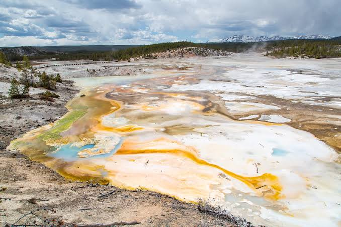

<title>Ash'karr Color Board</title>
<style>
:root { --bg:#241a12; --panel:#2e2218; --edge:#4a382a; --ink:#e8dcc8; --dim:#b09a7e; --gold:#c9a227; }
body { background:var(--bg); color:var(--ink); font-family:Georgia,'Times New Roman',serif; padding:24px 16px 64px; max-width:980px; margin:0 auto; }
header h1 { font-size:1.7em; margin:0 0 4px; color:var(--gold); letter-spacing:.03em; }
header p { color:var(--dim); margin:0 0 6px; font-size:.95em; }
.lawnote { border-left:3px solid var(--gold); padding:6px 12px; margin:14px 0 26px; color:var(--dim); font-size:.88em; background:var(--panel); }
.biome { background:var(--panel); border:1px solid var(--edge); border-radius:8px; padding:14px 16px 12px; margin:0 0 18px; }
.bh { display:flex; flex-wrap:wrap; align-items:baseline; gap:10px; margin-bottom:10px; }
.bh h2 { font-size:1.15em; margin:0; color:var(--gold); }
.tag { color:var(--dim); font-style:italic; font-size:.88em; }
.strip { display:flex; flex-wrap:wrap; align-items:stretch; gap:18px; margin-bottom:10px; }
.fam { display:flex; flex:1 1 340px; min-width:260px; border-radius:6px; overflow:hidden; border:1px solid var(--edge); }
.sw { flex:1; min-width:46px; height:74px; position:relative; }
.hx { position:absolute; bottom:4px; left:0; right:0; text-align:center; font-family:monospace; font-size:.68em; letter-spacing:.02em; }
.acc { flex:0 0 auto; display:flex; flex-direction:column; align-items:center; gap:4px; max-width:170px; }
.accsw { flex:none; width:74px; height:74px; border-radius:50%; border:2px dashed var(--gold); }
.accsw.none { display:flex; align-items:center; justify-content:center; color:var(--dim); font-size:1.6em; background:transparent; border-style:dotted; }
.acclbl { color:var(--dim); font-size:.75em; text-align:center; line-height:1.3; }
.q { color:var(--ink); opacity:.85; font-size:.85em; margin:3px 0; padding-left:10px; border-left:2px solid var(--edge); }
.ban { color:#d88a6a; font-size:.8em; margin-top:6px; }
.nt { color:var(--dim); font-size:.8em; margin-top:6px; }
.inv { background:#7a1f1f; color:#ffd9d9; font-size:.85em; padding:1px 6px; border-radius:4px; font-family:monospace; }
.src { color:#7d6a55; font-size:.72em; margin-top:8px; font-family:monospace; }
.ref { flex:0 0 auto; height:74px; width:auto; border-radius:6px; border:2px solid var(--gold); }
@media (max-width:480px) { .sw { min-width:36px; height:60px; } .accsw { width:60px; height:60px; } }
</style>
<header>
<h1>Ash'karr Biome Palette Anchors — draft color board</h1>
<p>PALETTE_ANCHOR_DRAFT_1 · 2026-09-10 · 31 biomes · review by eye and overrule in conversation — nothing here is ratified.</p>
<div class="lawnote">Contrast law (§8.4, RATIFIED): ONE palette family per biome, dark→light; flora-ladder slots separate by VALUE, not hue; at most ONE accent species (the dashed circle) — zero is allowed. Family hexes derive from each sheet's own §9 prose (quoted under each strip), calibrated against sampled existing plant art where any exists. A red INVENTED chip marks an anchor with neither prose nor art behind it.</div>
</header>
<section class="biome">
<div class="bh"><h2>Arid Shrubland</h2><span class="tag">Everything leans toward the light, and the wind agrees.</span></div>
<div class="strip"><div class="fam"><div class="sw" style="background:#1a201a"><span class="hx" style="color:#e8dcc8">#1a201a</span></div><div class="sw" style="background:#2e3b28"><span class="hx" style="color:#e8dcc8">#2e3b28</span></div><div class="sw" style="background:#4b5636"><span class="hx" style="color:#e8dcc8">#4b5636</span></div><div class="sw" style="background:#6f7a4e"><span class="hx" style="color:#e8dcc8">#6f7a4e</span></div><div class="sw" style="background:#9aa578"><span class="hx" style="color:#1a120b">#9aa578</span></div></div><div class="acc"><div class="sw accsw" style="background:#c9a84c"><span class="hx" style="color:#1a120b">#c9a84c</span></div><div class="acclbl">waxy gold (sunward flank)</div></div></div>
<div class="q">§9: “silver-green fuzz banding to grey fog-country darkward and waxy gold sunward”</div><div class="q">§9: “venomvine as near-black islands” (family dark end)</div><div class="nt">Silver-green family; venomvine sits at the near-black end of the same ramp.</div><div class="src">3 art files sampled · biomes/arid_shrubland.md §9</div>
</section><section class="biome">
<div class="bh"><h2>Desert</h2><span class="tag">Permanent golden hour, and everything is waiting at the edge of a shadow.</span></div>
<div class="strip"><div class="fam"><div class="sw" style="background:#3a2a18"><span class="hx" style="color:#e8dcc8">#3a2a18</span></div><div class="sw" style="background:#65461f"><span class="hx" style="color:#e8dcc8">#65461f</span></div><div class="sw" style="background:#93692c"><span class="hx" style="color:#e8dcc8">#93692c</span></div><div class="sw" style="background:#bf9448"><span class="hx" style="color:#1a120b">#bf9448</span></div><div class="sw" style="background:#e3c684"><span class="hx" style="color:#1a120b">#e3c684</span></div></div><div class="acc"><div class="sw accsw" style="background:#a8b878"><span class="hx" style="color:#1a120b">#a8b878</span></div><div class="acclbl">pale green (ultracactus / dew-line)</div></div></div>
<div class="q">§9: “hot low sun on lit faces — amber, ochre, rust — against long cool blue shadows”</div><div class="q">§9: “The only greens are the pale ultracactus flush with the ground and the dew-line halo”</div><div class="ban">⛔ saturated green anywhere but the two named greens</div><div class="nt">Cool blue shadow is the light regime, not a flora hue.</div><div class="src">3 art files sampled · biomes/desert.md §9</div>
</section><section class="biome">
<div class="bh"><h2>Dune Sea</h2><span class="tag">A machined ochre surface under a star that has not moved since the world began.</span></div>
<div class="strip"><div class="fam"><div class="sw" style="background:#2b2015"><span class="hx" style="color:#e8dcc8">#2b2015</span></div><div class="sw" style="background:#6b5330"><span class="hx" style="color:#e8dcc8">#6b5330</span></div><div class="sw" style="background:#a07d3d"><span class="hx" style="color:#e8dcc8">#a07d3d</span></div><div class="sw" style="background:#cca95e"><span class="hx" style="color:#1a120b">#cca95e</span></div><div class="sw" style="background:#ecdaa4"><span class="hx" style="color:#1a120b">#ecdaa4</span></div></div><div class="acc"><div class="sw accsw" style="background:#2f9245"><span class="hx" style="color:#e8dcc8">#2f9245</span></div><div class="acclbl">the hard green line (river/coast edge)</div></div></div>
<div class="q">§9: “ochre, bone, rust-tan and pale gold in the sand”</div><div class="q">§9: “a hard green line arrives with no warning … the most saturated thing on the dayside”</div><div class="ban">⛔ blue sky tones (sky is bleached white) · penumbra/soft shadow color</div><div class="nt">Only strong contrast is shadow black; the green line lands like a shout.</div><div class="src">2 art files sampled · biomes/dune_sea.md §9</div>
</section><section class="biome">
<div class="bh"><h2>Deep Desert</h2><span class="tag">Everything that ever died here is still here, and most of it is only asleep.</span></div>
<div class="strip"><div class="fam"><div class="sw" style="background:#4a4238"><span class="hx" style="color:#e8dcc8">#4a4238</span></div><div class="sw" style="background:#7d7264"><span class="hx" style="color:#e8dcc8">#7d7264</span></div><div class="sw" style="background:#a89d8c"><span class="hx" style="color:#1a120b">#a89d8c</span></div><div class="sw" style="background:#cfc6b4"><span class="hx" style="color:#1a120b">#cfc6b4</span></div><div class="sw" style="background:#efe9da"><span class="hx" style="color:#1a120b">#efe9da</span></div></div><div class="acc"><div class="sw accsw none">∅</div><div class="acclbl">no accent — zero claimed (§8.4 allows zero)</div></div></div>
<div class="q">§9: “bleached bone, pale dust, wind-glazed dark stone, salt-white. No green anywhere in the open”</div><div class="q">§9: “no black char, because nothing has ever burned here”</div><div class="ban">⛔ green in the open · black char · anything shiny/crystalline/mineral</div><div class="nt">Accent deliberately NONE (§8.4 allows zero); pale-and-powdery is the whole statement.</div><div class="src">2 art files sampled · biomes/deep_desert.md §9</div>
</section><section class="biome">
<div class="bh"><h2>Fall Line</h2><span class="tag">A slow rain of other people&#x27;s ruin, and everything alive is hiding under it.</span></div>
<div class="strip"><div class="fam"><div class="sw" style="background:#141517"><span class="hx" style="color:#e8dcc8">#141517</span></div><div class="sw" style="background:#35383b"><span class="hx" style="color:#e8dcc8">#35383b</span></div><div class="sw" style="background:#5d6165"><span class="hx" style="color:#e8dcc8">#5d6165</span></div><div class="sw" style="background:#8f9599"><span class="hx" style="color:#1a120b">#8f9599</span></div><div class="sw" style="background:#d6dad8"><span class="hx" style="color:#1a120b">#d6dad8</span></div></div><div class="acc"><div class="sw accsw" style="background:#46e06a"><span class="hx" style="color:#1a120b">#46e06a</span></div><div class="acclbl">status-lamp green (live wreck)</div></div></div>
<div class="q">§9: “bleached bone-white hardpan … punctuated by hard black shade and the scorched, oxidised colour of fresh re-entry”</div><div class="q">§9: “a status lamp still green in the black under a hull”</div><div class="ban">⛔ orange rust (rust “has not had time to go orange yet”)</div><div class="nt">Flora lives in wreck shade — the family is char/heat-blued greys, not the white flats.</div><div class="src">no existing art — prose only · biomes/fall_line.md §9</div>
</section><section class="biome">
<div class="bh"><h2>Forsaken Crags</h2><span class="tag">Obsidian teeth in a fog light cannot cross, lit only by what grows.</span></div>
<div class="strip"><div class="fam"><div class="sw" style="background:#101208"><span class="hx" style="color:#e8dcc8">#101208</span></div><div class="sw" style="background:#2b2c16"><span class="hx" style="color:#e8dcc8">#2b2c16</span></div><div class="sw" style="background:#4d4a26"><span class="hx" style="color:#e8dcc8">#4d4a26</span></div><div class="sw" style="background:#75703c"><span class="hx" style="color:#e8dcc8">#75703c</span></div><div class="sw" style="background:#a49f5e"><span class="hx" style="color:#1a120b">#a49f5e</span></div></div><div class="acc"><div class="sw accsw" style="background:#4f9fe8"><span class="hx" style="color:#1a120b">#4f9fe8</span></div><div class="acclbl">glow-blue darklight (gamma flora)</div></div></div>
<div class="q">§9: “obsidian black, glow-blue, lamp-yellow, hydrocarbon-frost grey on the rime faces”</div><div class="q">§9: “blue darklight gammas against yellow giant flora, a harbor-at-night palette”</div><div class="nt">Two-tone biolum forced through §8.4: lamp-yellow IS the family&#x27;s light end, glow-blue is the one accent. Owner may prefer the inverse.</div><div class="src">3 art files sampled · biomes/forsaken_crags.md §9</div>
</section><section class="biome">
<div class="bh"><h2>Nightside Ice</h2><span class="tag">A chemistry set the size of a hemisphere, switched off, under the aurora.</span></div>
<div class="strip"><div class="fam"><div class="sw" style="background:#10141f"><span class="hx" style="color:#e8dcc8">#10141f</span></div><div class="sw" style="background:#2a3345"><span class="hx" style="color:#e8dcc8">#2a3345</span></div><div class="sw" style="background:#4d5a70"><span class="hx" style="color:#e8dcc8">#4d5a70</span></div><div class="sw" style="background:#8593a6"><span class="hx" style="color:#1a120b">#8593a6</span></div><div class="sw" style="background:#ccd6de"><span class="hx" style="color:#1a120b">#ccd6de</span></div></div><div class="acc"><div class="sw accsw" style="background:#4fd6a0"><span class="hx" style="color:#1a120b">#4fd6a0</span></div><div class="acclbl">aurora-green / pan chemistry color</div></div></div>
<div class="q">§9: “white dirty ice over blue-black rock … aurora green and violet as the ambient · starlight grey”</div><div class="q">§9: “in the pans and nowhere else, the shockingly clean saturated chemistry colour”</div><div class="ban">⛔ warm light of any kind (“No warm light anywhere except what the player brings”)</div><div class="src">no existing art — prose only · biomes/nightside_ice.md §9</div>
</section><section class="biome">
<div class="bh"><h2>Poison Forest</h2><span class="tag">A forest slowly turning into a smelter, lit like a dawn that never arrives.</span></div>
<div class="strip"><div class="fam"><div class="sw" style="background:#17191b"><span class="hx" style="color:#e8dcc8">#17191b</span></div><div class="sw" style="background:#4d4842"><span class="hx" style="color:#e8dcc8">#4d4842</span></div><div class="sw" style="background:#888078"><span class="hx" style="color:#e8dcc8">#888078</span></div><div class="sw" style="background:#b5b0a8"><span class="hx" style="color:#1a120b">#b5b0a8</span></div><div class="sw" style="background:#d5d4d2"><span class="hx" style="color:#1a120b">#d5d4d2</span></div></div><div class="acc"><div class="sw accsw" style="background:#eaac27"><span class="hx" style="color:#1a120b">#eaac27</span></div><div class="acclbl">mineral-ochre runoff band (owner reference)</div></div></div>
<div class="q">§9: “wet black and slate ground · bone-pale trunks streaked with grey metal tears”</div><div class="q">OWNER (2026-09-10): “Artistic reference for Poison Forest. Rainbow springs due to minerals and chemistry, not vulcanism.”</div><div class="ban">⛔ warm LIGHT (“no warm light anywhere”) — the ochre is mineral pigment, not lighting · volcanic/lava imagery — CANON: the rainbow coloration is MINERAL/CHEMISTRY, never volcanism</div><div class="nt">Recalibrated against the owner&#x27;s spring-terrace reference (PIL-sampled): family = wet slate → silica white (#4d4842/#888078/#d5d4d2 sampled); accent contest resolved by the reference — ochre runoff wins (saturated core #eaac27, the image&#x27;s dominant saturated register); runner-up milky turquoise (#d0e0e5, too close to silica white in value/sat); sulfur drops to third.</div><div class="src">4 art files sampled · biomes/poison_forest.md §9</div>
</section><section class="biome">
<div class="bh"><h2>Terminator Sea</h2><span class="tag">One black sail on a white pan, in the light of a sunset that is not going anywhere.</span></div>
<div class="strip"><div class="fam"><div class="sw" style="background:#0e1410"><span class="hx" style="color:#e8dcc8">#0e1410</span></div><div class="sw" style="background:#24362a"><span class="hx" style="color:#e8dcc8">#24362a</span></div><div class="sw" style="background:#486049"><span class="hx" style="color:#e8dcc8">#486049</span></div><div class="sw" style="background:#8a9c8b"><span class="hx" style="color:#1a120b">#8a9c8b</span></div><div class="sw" style="background:#dcded4"><span class="hx" style="color:#1a120b">#dcded4</span></div></div><div class="acc"><div class="sw accsw" style="background:#d08b3d"><span class="hx" style="color:#1a120b">#d08b3d</span></div><div class="acclbl">grazing amber (starward rim)</div></div></div>
<div class="q">§9: “salt white and pale grey ground, dominant and everywhere · black-green and near-black in the few standing plants”</div><div class="q">§9: “low warm amber on every starward face, because grazing light is reddened light”</div><div class="ban">⛔ blue water (“the water … is never blue”) · ragged shapes, crowding</div><div class="nt">Family runs black-green plant → salt-white ground; the “one saturated accent per animal” rule is fauna&#x27;s, not flora&#x27;s.</div><div class="src">no existing art — prose only · biomes/terminator_sea.md §9</div>
</section><section class="biome">
<div class="bh"><h2>The Blue Desert</h2><span class="tag">Extremely blue from far away; colorless up close.</span></div>
<div class="strip"><div class="fam"><div class="sw" style="background:#1c2430"><span class="hx" style="color:#e8dcc8">#1c2430</span></div><div class="sw" style="background:#35455a"><span class="hx" style="color:#e8dcc8">#35455a</span></div><div class="sw" style="background:#5a7086"><span class="hx" style="color:#e8dcc8">#5a7086</span></div><div class="sw" style="background:#8fa4b8"><span class="hx" style="color:#1a120b">#8fa4b8</span></div><div class="sw" style="background:#d2dde6"><span class="hx" style="color:#1a120b">#d2dde6</span></div></div><div class="acc"><div class="sw accsw" style="background:#55c0f0"><span class="hx" style="color:#1a120b">#55c0f0</span></div><div class="acclbl">blue-fire halo (Burners)</div></div></div>
<div class="q">§9: “scattering-blue at distance, glass-clear and grey underfoot; transparent flora refracting”</div><div class="q">§9: “the Burners&#x27; halos of blue fire the only warm light for a hundred kilometers”</div><div class="ban">⛔ warm hues except rust/char on the fallen</div><div class="nt">Transparent flora: the family is what refraction TINTS, not body color — hard to anchor in flat hex; expect an overrule.</div><div class="src">no existing art — prose only · biomes/the_blue_desert.md §9</div>
</section><section class="biome">
<div class="bh"><h2>The Contagion</h2><span class="tag">A red valley under a storm that never stops.</span></div>
<div class="strip"><div class="fam"><div class="sw" style="background:#2c1214"><span class="hx" style="color:#e8dcc8">#2c1214</span></div><div class="sw" style="background:#55211f"><span class="hx" style="color:#e8dcc8">#55211f</span></div><div class="sw" style="background:#8a3a32"><span class="hx" style="color:#e8dcc8">#8a3a32</span></div><div class="sw" style="background:#b86656"><span class="hx" style="color:#e8dcc8">#b86656</span></div><div class="sw" style="background:#dfa08e"><span class="hx" style="color:#1a120b">#dfa08e</span></div></div><div class="acc"><div class="sw accsw" style="background:#6b8fd6"><span class="hx" style="color:#1a120b">#6b8fd6</span></div><div class="acclbl">aberration blue (pink-and-blue)</div></div></div>
<div class="q">§9: “red water, red fog, pink-and-blue aberrations, the grey-white of husks and sterilized matter at the burn line”</div><div class="src">3 art files sampled · biomes/the_contagion.md §9</div>
</section><section class="biome">
<div class="bh"><h2>The Cracked Lands</h2><span class="tag">A thin line of green in the shade, beside the razor&#x27;s edge of the open sun.</span></div>
<div class="strip"><div class="fam"><div class="sw" style="background:#382e25"><span class="hx" style="color:#e8dcc8">#382e25</span></div><div class="sw" style="background:#685845"><span class="hx" style="color:#e8dcc8">#685845</span></div><div class="sw" style="background:#97866e"><span class="hx" style="color:#e8dcc8">#97866e</span></div><div class="sw" style="background:#c2b298"><span class="hx" style="color:#1a120b">#c2b298</span></div><div class="sw" style="background:#e8e0cb"><span class="hx" style="color:#1a120b">#e8e0cb</span></div></div><div class="acc"><div class="sw accsw" style="background:#5e7d3a"><span class="hx" style="color:#e8dcc8">#5e7d3a</span></div><div class="acclbl">slot-moss green (only in blue shade)</div></div></div>
<div class="q">§9: “cracked clay grey-white, red-brown flood stain on the walls, moss green in the slots”</div><div class="q">§9: “the green only ever in the blue shade”</div><div class="src">3 art files sampled · biomes/the_cracked_lands.md §9</div>
</section><section class="biome">
<div class="bh"><h2>The Fever Wood</h2><span class="tag">A lamplit crown over black glass — giant stillness, twice inhabited.</span></div>
<div class="strip"><div class="fam"><div class="sw" style="background:#1c180e"><span class="hx" style="color:#e8dcc8">#1c180e</span></div><div class="sw" style="background:#38321a"><span class="hx" style="color:#e8dcc8">#38321a</span></div><div class="sw" style="background:#575428"><span class="hx" style="color:#e8dcc8">#575428</span></div><div class="sw" style="background:#7c7c42"><span class="hx" style="color:#e8dcc8">#7c7c42</span></div><div class="sw" style="background:#a5a86b"><span class="hx" style="color:#1a120b">#a5a86b</span></div></div><div class="acc"><div class="sw accsw" style="background:#e0a83c"><span class="hx" style="color:#1a120b">#e0a83c</span></div><div class="acclbl">nectar amber / steam-lamp gold</div></div></div>
<div class="q">§9: “living-wood browns and moss greens, nectar amber, oil-sheen rainbows on the seeps”</div><div class="q">§9: “warm steam-lamp gold and green-filtered sun in the crown”</div><div class="src">3 art files sampled · biomes/the_fever_wood.md §9</div>
</section><section class="biome">
<div class="bh"><h2>The Forge</h2><span class="tag">Dark towers against the sun, herds grazing the smoke.</span></div>
<div class="strip"><div class="fam"><div class="sw" style="background:#0f0e0e"><span class="hx" style="color:#e8dcc8">#0f0e0e</span></div><div class="sw" style="background:#2b2927"><span class="hx" style="color:#e8dcc8">#2b2927</span></div><div class="sw" style="background:#4c4a46"><span class="hx" style="color:#e8dcc8">#4c4a46</span></div><div class="sw" style="background:#757370"><span class="hx" style="color:#e8dcc8">#757370</span></div><div class="sw" style="background:#a5a3a0"><span class="hx" style="color:#1a120b">#a5a3a0</span></div></div><div class="acc"><div class="sw accsw" style="background:#7ce22a"><span class="hx" style="color:#1a120b">#7ce22a</span></div><div class="acclbl">fireweed&#x27;s defiant green</div></div></div>
<div class="q">§9: “basalt black, obsidian gloss, seam-red, ash grey, fireweed&#x27;s defiant green in the flash-zones, beldon amber”</div><div class="nt">Seam-red is ground/light, not flora; fireweed green sampled near #9dfb00 in existing art, tempered.</div><div class="src">3 art files sampled · biomes/the_forge.md §9</div>
</section><section class="biome">
<div class="bh"><h2>The Greentide</h2><span class="tag">A green ribbon of total war, steaming, growing while you watch.</span></div>
<div class="strip"><div class="fam"><div class="sw" style="background:#12200f"><span class="hx" style="color:#e8dcc8">#12200f</span></div><div class="sw" style="background:#23421c"><span class="hx" style="color:#e8dcc8">#23421c</span></div><div class="sw" style="background:#3c6b2b"><span class="hx" style="color:#e8dcc8">#3c6b2b</span></div><div class="sw" style="background:#63944a"><span class="hx" style="color:#e8dcc8">#63944a</span></div><div class="sw" style="background:#9cc47e"><span class="hx" style="color:#1a120b">#9cc47e</span></div></div><div class="acc"><div class="sw accsw none">∅</div><div class="acclbl">no accent — zero claimed (§8.4 allows zero)</div></div></div>
<div class="q">§9: “every green at once, white steam, black mud, the river&#x27;s gradient from glass-clear … to milk and salt-crust”</div><div class="nt">Accent NONE drafted: “every green at once” is the spectacle; leaving the accent slot open for a future fruit/bloom commission.</div><div class="src">3 art files sampled · biomes/the_greentide.md §9</div>
</section><section class="biome">
<div class="bh"><h2>The Grey Deep</h2><span class="tag">Grey murk, pale pillars, and the dead standing at attention.</span></div>
<div class="strip"><div class="fam"><div class="sw" style="background:#171b19"><span class="hx" style="color:#e8dcc8">#171b19</span></div><div class="sw" style="background:#333937"><span class="hx" style="color:#e8dcc8">#333937</span></div><div class="sw" style="background:#565d5a"><span class="hx" style="color:#e8dcc8">#565d5a</span></div><div class="sw" style="background:#868c88"><span class="hx" style="color:#e8dcc8">#868c88</span></div><div class="sw" style="background:#c2c6c0"><span class="hx" style="color:#1a120b">#c2c6c0</span></div></div><div class="acc"><div class="sw accsw" style="background:#d81f6e"><span class="hx" style="color:#e8dcc8">#d81f6e</span></div><div class="acclbl">the one impossible saturated color [INVENTED hue] <span class="inv">INVENTED</span></div></div></div>
<div class="q">§9: “every grey, bone-pale pillar mineral, crystal white on the statuary, the murk&#x27;s green cast”</div><div class="q">§9: “and one impossible saturated color, moving, rare” (prose demands the accent but names no hue)</div><div class="src">no existing art — prose only · biomes/the_grey_deep.md §9</div>
</section><section class="biome">
<div class="bh"><h2>The Lantern Deeps</h2><span class="tag">A blue lantern burning under the mountain.</span></div>
<div class="strip"><div class="fam"><div class="sw" style="background:#0a0d16"><span class="hx" style="color:#e8dcc8">#0a0d16</span></div><div class="sw" style="background:#1c2438"><span class="hx" style="color:#e8dcc8">#1c2438</span></div><div class="sw" style="background:#33415e"><span class="hx" style="color:#e8dcc8">#33415e</span></div><div class="sw" style="background:#566a8e"><span class="hx" style="color:#e8dcc8">#566a8e</span></div><div class="sw" style="background:#8ba4c4"><span class="hx" style="color:#1a120b">#8ba4c4</span></div></div><div class="acc"><div class="sw accsw" style="background:#e8862e"><span class="hx" style="color:#1a120b">#e8862e</span></div><div class="acclbl">imported kyber orange</div></div></div>
<div class="q">§9: “blue-on-black, fungal grey and green, the metal and ceramic of superb dead technology, the orange of the imported crystal”</div><div class="ban">⛔ free light (sheet §6.6)</div><div class="src">no existing art — prose only · biomes/the_lantern_deeps.md §9</div>
</section><section class="biome">
<div class="bh"><h2>The Miasma</h2><span class="tag">Rainbow blooms in green-gold haze — hope, composting.</span></div>
<div class="strip"><div class="fam"><div class="sw" style="background:#241f12"><span class="hx" style="color:#e8dcc8">#241f12</span></div><div class="sw" style="background:#3e3a22"><span class="hx" style="color:#e8dcc8">#3e3a22</span></div><div class="sw" style="background:#606744"><span class="hx" style="color:#e8dcc8">#606744</span></div><div class="sw" style="background:#86904f"><span class="hx" style="color:#e8dcc8">#86904f</span></div><div class="sw" style="background:#b8bd82"><span class="hx" style="color:#1a120b">#b8bd82</span></div></div><div class="acc"><div class="sw accsw" style="background:#e0559a"><span class="hx" style="color:#e8dcc8">#e0559a</span></div><div class="acclbl">rainbow-bloom (representative hex of a multi-hue suite)</div></div></div>
<div class="q">§9: “muck-browns and mangal greens, salt-crust white on the sea side”</div><div class="q">§9: “the rainbow flora burning through it: genuine, saturated, beautiful color that means exactly what it seems to mean”</div><div class="nt">The accent species is the rainbow suite itself (3–4 blooms); one hex stands for it on this board only.</div><div class="src">3 art files sampled · biomes/the_miasma.md §9</div>
</section><section class="biome">
<div class="bh"><h2>The Propane Lakes</h2><span class="tag">Aurora curtains over a black mirror sea, with blue flame running on the ice.</span></div>
<div class="strip"><div class="fam"><div class="sw" style="background:#0b0d12"><span class="hx" style="color:#e8dcc8">#0b0d12</span></div><div class="sw" style="background:#232833"><span class="hx" style="color:#e8dcc8">#232833</span></div><div class="sw" style="background:#454d5c"><span class="hx" style="color:#e8dcc8">#454d5c</span></div><div class="sw" style="background:#7d8794"><span class="hx" style="color:#e8dcc8">#7d8794</span></div><div class="sw" style="background:#ccd4dc"><span class="hx" style="color:#1a120b">#ccd4dc</span></div></div><div class="acc"><div class="sw accsw" style="background:#4fa8f0"><span class="hx" style="color:#1a120b">#4fa8f0</span></div><div class="acclbl">running-flame blue</div></div></div>
<div class="q">§9: “black mirror, aurora green/violet, crystal-clear and frost-white, the blue of running flame”</div><div class="src">3 art files sampled · biomes/the_propane_lakes.md §9</div>
</section><section class="biome">
<div class="bh"><h2>The Pyrelands</h2><span class="tag">Gold grass, black bands, and a horizon that is always smoking somewhere.</span></div>
<div class="strip"><div class="fam"><div class="sw" style="background:#2e2410"><span class="hx" style="color:#e8dcc8">#2e2410</span></div><div class="sw" style="background:#5d4a1e"><span class="hx" style="color:#e8dcc8">#5d4a1e</span></div><div class="sw" style="background:#8f7530"><span class="hx" style="color:#e8dcc8">#8f7530</span></div><div class="sw" style="background:#c0a34a"><span class="hx" style="color:#1a120b">#c0a34a</span></div><div class="sw" style="background:#e6cf7e"><span class="hx" style="color:#1a120b">#e6cf7e</span></div></div><div class="acc"><div class="sw accsw" style="background:#62c944"><span class="hx" style="color:#1a120b">#62c944</span></div><div class="acclbl">regrowth&#x27;s shocking week-old green</div></div></div>
<div class="q">§9: “grass-gold, ash-black in migrating bands, regrowth&#x27;s shocking week-old green, fulgurite white in the black”</div><div class="src">2 art files sampled · biomes/the_pyrelands.md §9</div>
</section><section class="biome">
<div class="bh"><h2>The Rot</h2><span class="tag">A pale forest with a heartbeat of rot.</span></div>
<div class="strip"><div class="fam"><div class="sw" style="background:#1b1622"><span class="hx" style="color:#e8dcc8">#1b1622</span></div><div class="sw" style="background:#453a4e"><span class="hx" style="color:#e8dcc8">#453a4e</span></div><div class="sw" style="background:#6e6275"><span class="hx" style="color:#e8dcc8">#6e6275</span></div><div class="sw" style="background:#9b90a2"><span class="hx" style="color:#1a120b">#9b90a2</span></div><div class="sw" style="background:#d9d3da"><span class="hx" style="color:#1a120b">#d9d3da</span></div></div><div class="acc"><div class="sw accsw" style="background:#5ac8e8"><span class="hx" style="color:#1a120b">#5ac8e8</span></div><div class="acclbl">glow-blue (glowstool constellations)</div></div></div>
<div class="q">§9: “bone white, lilac, milk white, glow-blue and lantern-gold against wet black soil”</div><div class="nt">Lantern-gold is the rival accent; glow-blue drafted because the fungal art already carries it. Owner&#x27;s call.</div><div class="src">3 art files sampled · biomes/the_rot.md §9</div>
</section><section class="biome">
<div class="bh"><h2>The Rust Cathedral</h2><span class="tag">A circuit board the size of a country, humming to itself in its sleep.</span></div>
<div class="strip"><div class="fam"><div class="sw" style="background:#241511"><span class="hx" style="color:#e8dcc8">#241511</span></div><div class="sw" style="background:#4d2c1c"><span class="hx" style="color:#e8dcc8">#4d2c1c</span></div><div class="sw" style="background:#7c4a2a"><span class="hx" style="color:#e8dcc8">#7c4a2a</span></div><div class="sw" style="background:#a9713c"><span class="hx" style="color:#e8dcc8">#a9713c</span></div><div class="sw" style="background:#cfa065"><span class="hx" style="color:#1a120b">#cfa065</span></div></div><div class="acc"><div class="sw accsw" style="background:#3fae8e"><span class="hx" style="color:#e8dcc8">#3fae8e</span></div><div class="acclbl">verdigris at the coolant</div></div></div>
<div class="q">§9: “rust film over dark metal, verdigris at the coolant, the dust&#x27;s ochre drifts, hazard-sulfur at the pools — and no green anywhere”</div><div class="ban">⛔ green vegetation of any kind (“no green anywhere” — verdigris is mineral, not plant)</div><div class="src">no existing art — prose only · biomes/the_rust_cathedral.md §9</div>
</section><section class="biome">
<div class="bh"><h2>The Scald</h2><span class="tag">Cyan glow under white steam — the sea that is also a forge.</span></div>
<div class="strip"><div class="fam"><div class="sw" style="background:#0c2226"><span class="hx" style="color:#e8dcc8">#0c2226</span></div><div class="sw" style="background:#14454c"><span class="hx" style="color:#e8dcc8">#14454c</span></div><div class="sw" style="background:#1f6f74"><span class="hx" style="color:#e8dcc8">#1f6f74</span></div><div class="sw" style="background:#45a3a4"><span class="hx" style="color:#e8dcc8">#45a3a4</span></div><div class="sw" style="background:#a8dcd6"><span class="hx" style="color:#1a120b">#a8dcd6</span></div></div><div class="acc"><div class="sw accsw" style="background:#e8763a"><span class="hx" style="color:#1a120b">#e8763a</span></div><div class="acclbl">thermophile-orange (representative of the mat-band rainbow)</div></div></div>
<div class="q">§9: “boiling white, scald cyan, thermophile rainbow, basalt rim black, the peaks&#x27; cloud-cap”</div><div class="q">§9: “rainbow mat-bands where the shallows clear”</div><div class="nt">Hot-spring mat bands run yellow→orange→rust by temperature; one hex stands for the band system.</div><div class="src">no existing art — prose only · biomes/the_scald.md §9</div>
</section><section class="biome">
<div class="bh"><h2>The Scarlands</h2><span class="tag">A battlefield still explaining itself, in a land the color of reaction.</span></div>
<div class="strip"><div class="fam"><div class="sw" style="background:#141210"><span class="hx" style="color:#e8dcc8">#141210</span></div><div class="sw" style="background:#322d26"><span class="hx" style="color:#e8dcc8">#322d26</span></div><div class="sw" style="background:#55503f"><span class="hx" style="color:#e8dcc8">#55503f</span></div><div class="sw" style="background:#7d786a"><span class="hx" style="color:#e8dcc8">#7d786a</span></div><div class="sw" style="background:#a8a496"><span class="hx" style="color:#1a120b">#a8a496</span></div></div><div class="acc"><div class="sw accsw" style="background:#86c81e"><span class="hx" style="color:#1a120b">#86c81e</span></div><div class="acclbl">acid-green pool (the rainbow pools&#x27; lead hue)</div></div></div>
<div class="q">§9: “crater-black glower crusts, rust and bone of the works, slag grey”</div><div class="q">§9: “the rainbow pools as the only saturation on the map: acid greens, copper blues, sulfur yellows, all lying about what they are”</div><div class="src">1 art files sampled · biomes/the_scarlands.md §9</div>
</section><section class="biome">
<div class="bh"><h2>The Slime</h2><span class="tag">A body the size of a country, reading everything that touches it.</span></div>
<div class="strip"><div class="fam"><div class="sw" style="background:#2a2e14"><span class="hx" style="color:#e8dcc8">#2a2e14</span></div><div class="sw" style="background:#4c5426"><span class="hx" style="color:#e8dcc8">#4c5426</span></div><div class="sw" style="background:#71773f"><span class="hx" style="color:#e8dcc8">#71773f</span></div><div class="sw" style="background:#969c58"><span class="hx" style="color:#1a120b">#969c58</span></div><div class="sw" style="background:#c2c488"><span class="hx" style="color:#1a120b">#c2c488</span></div></div><div class="acc"><div class="sw accsw" style="background:#d8879a"><span class="hx" style="color:#1a120b">#d8879a</span></div><div class="acclbl">membrane pink (rich ground)</div></div></div>
<div class="q">§9: “translucent greens and ambers, membrane pinks in the rich ground, the grey of drowned ruins”</div><div class="nt">Family midpoints sampled straight off the existing slimy-flora art (#71773f–#828b5f).</div><div class="src">3 art files sampled · biomes/the_slime.md §9</div>
</section><section class="biome">
<div class="bh"><h2>The Sump</h2><span class="tag">Black glass under horizon-glow, ringed in farmed lamplight.</span></div>
<div class="strip"><div class="fam"><div class="sw" style="background:#101210"><span class="hx" style="color:#e8dcc8">#101210</span></div><div class="sw" style="background:#24291f"><span class="hx" style="color:#e8dcc8">#24291f</span></div><div class="sw" style="background:#3d4433"><span class="hx" style="color:#e8dcc8">#3d4433</span></div><div class="sw" style="background:#5f684c"><span class="hx" style="color:#e8dcc8">#5f684c</span></div><div class="sw" style="background:#8a9270"><span class="hx" style="color:#e8dcc8">#8a9270</span></div></div><div class="acc"><div class="sw accsw" style="background:#e0a63c"><span class="hx" style="color:#1a120b">#e0a63c</span></div><div class="acclbl">lamp gold (wick-gardens)</div></div></div>
<div class="q">§9: “every black (wet, glassy, matte), horizon amber, lamp gold, the waxy grey-greens of the edge-flora, rust of the derricks”</div><div class="src">1 art files sampled · biomes/the_sump.md §9</div>
</section><section class="biome">
<div class="bh"><h2>The Twilight Deep</h2><span class="tag">Golden wells in green dusk, lamplight on the riverbanks below.</span></div>
<div class="strip"><div class="fam"><div class="sw" style="background:#142016"><span class="hx" style="color:#e8dcc8">#142016</span></div><div class="sw" style="background:#2c4028"><span class="hx" style="color:#e8dcc8">#2c4028</span></div><div class="sw" style="background:#52603a"><span class="hx" style="color:#e8dcc8">#52603a</span></div><div class="sw" style="background:#7f8455"><span class="hx" style="color:#e8dcc8">#7f8455</span></div><div class="sw" style="background:#b0ab7d"><span class="hx" style="color:#1a120b">#b0ab7d</span></div></div><div class="acc"><div class="sw accsw" style="background:#e2b048"><span class="hx" style="color:#1a120b">#e2b048</span></div><div class="acclbl">well-light / lamp gold</div></div></div>
<div class="q">§9: “deep greens and kelp bronze, mat-pale ceiling, mud browns in the dry-looking rivers, silver shoal-flash, lamp gold”</div><div class="src">no existing art — prose only · biomes/the_twilight_deep.md §9</div>
</section><section class="biome">
<div class="bh"><h2>The Webwork</h2><span class="tag">A green and white hellscape, silent, owned.</span></div>
<div class="strip"><div class="fam"><div class="sw" style="background:#101a0f"><span class="hx" style="color:#e8dcc8">#101a0f</span></div><div class="sw" style="background:#22331d"><span class="hx" style="color:#e8dcc8">#22331d</span></div><div class="sw" style="background:#3a4f2e"><span class="hx" style="color:#e8dcc8">#3a4f2e</span></div><div class="sw" style="background:#5e7347"><span class="hx" style="color:#e8dcc8">#5e7347</span></div><div class="sw" style="background:#8c9c72"><span class="hx" style="color:#1a120b">#8c9c72</span></div></div><div class="acc"><div class="sw accsw" style="background:#f2ead6"><span class="hx" style="color:#1a120b">#f2ead6</span></div><div class="acclbl">bone-white bloom (pale-flowers, glowing)</div></div></div>
<div class="q">§9: “every dark green, dead white silk, bone-white blooms, the red-brown of hide-woven nests”</div><div class="q">§9: “the pale flowers glowing in the dark like route-lights”</div><div class="nt">The accent is a VALUE spike (near-white), not a hue — deliberate: silk and blooms own brightness here.</div><div class="src">3 art files sampled · biomes/the_webwork.md §9</div>
</section><section class="biome">
<div class="bh"><h2>Wasteland</h2><span class="tag">A just-lost sunset, flickering with wrathful lightning.</span></div>
<div class="strip"><div class="fam"><div class="sw" style="background:#141713"><span class="hx" style="color:#e8dcc8">#141713</span></div><div class="sw" style="background:#31352c"><span class="hx" style="color:#e8dcc8">#31352c</span></div><div class="sw" style="background:#55594b"><span class="hx" style="color:#e8dcc8">#55594b</span></div><div class="sw" style="background:#83867a"><span class="hx" style="color:#e8dcc8">#83867a</span></div><div class="sw" style="background:#c0c2b6"><span class="hx" style="color:#1a120b">#c0c2b6</span></div></div><div class="acc"><div class="sw accsw" style="background:#7c3f92"><span class="hx" style="color:#e8dcc8">#7c3f92</span></div><div class="acclbl">sickly radiance violet (radiotroph glow)</div></div></div>
<div class="q">§9: “salt white, ash grey, vitrified black-green, brine-pool mineral color — and the sickly radiances against it”</div><div class="nt">Existing toxi-flora art samples violet (#6f267c, #4e2f56) — the “sickly radiance” drafted violet to match it rather than glow-green.</div><div class="src">3 art files sampled · biomes/wasteland.md §9</div>
</section><section class="biome">
<div class="bh"><h2>Weeping Stones</h2><span class="tag">Green held in blue shade; the upright comb.</span></div>
<div class="strip"><div class="fam"><div class="sw" style="background:#16221a"><span class="hx" style="color:#e8dcc8">#16221a</span></div><div class="sw" style="background:#2c4229"><span class="hx" style="color:#e8dcc8">#2c4229</span></div><div class="sw" style="background:#4a6236"><span class="hx" style="color:#e8dcc8">#4a6236</span></div><div class="sw" style="background:#728a52"><span class="hx" style="color:#e8dcc8">#728a52</span></div><div class="sw" style="background:#a4b880"><span class="hx" style="color:#1a120b">#a4b880</span></div></div><div class="acc"><div class="sw accsw" style="background:#4aa88e"><span class="hx" style="color:#e8dcc8">#4aa88e</span></div><div class="acclbl">verdigris (where metal meets moss)</div></div></div>
<div class="q">§9: “bone-white sunlit stone; wet black weep-streaks; green held in blue shade; verdigris where metal meets moss”</div><div class="src">3 art files sampled · biomes/weeping_stones.md §9</div>
</section><section class="biome">
<div class="bh"><h2>Wreck Fields</h2><span class="tag">A field of mirrors on slate, and every mirror that is still warm has a garden.</span></div>
<div class="strip"><div class="fam"><div class="sw" style="background:#161a20"><span class="hx" style="color:#e8dcc8">#161a20</span></div><div class="sw" style="background:#333a44"><span class="hx" style="color:#e8dcc8">#333a44</span></div><div class="sw" style="background:#58616e"><span class="hx" style="color:#e8dcc8">#58616e</span></div><div class="sw" style="background:#8a929e"><span class="hx" style="color:#1a120b">#8a929e</span></div><div class="sw" style="background:#c8cfd6"><span class="hx" style="color:#1a120b">#c8cfd6</span></div></div><div class="acc"><div class="sw accsw" style="background:#3fbf9a"><span class="hx" style="color:#1a120b">#3fbf9a</span></div><div class="acclbl">verdigris (one saturated hue per patch — rotating)</div></div></div>
<div class="q">§9: “cold grey-blue ground and sky · bright bare metal — silver, gunmetal”</div><div class="q">§9: “one saturated hue per patch, and never the same hue twice in a shot: verdigris here, titanium white there, a bad yellow-green”</div><div class="ban">⛔ rust orange (“No rust orange anywhere” — hard sheet ban)</div><div class="nt">The accent ROTATES per patch by sheet law; verdigris drafted as the board&#x27;s stand-in.</div><div class="src">no existing art — prose only · biomes/wreck_fields.md §9</div>
</section>
<footer style="color:#7d6a55;font-size:.75em;margin-top:26px">Data twin: design/Jawa/worldbuilding/palettes/biome_palette_anchors.json — generated together, edit the JSON and regenerate rather than hand-editing this page.</footer>
